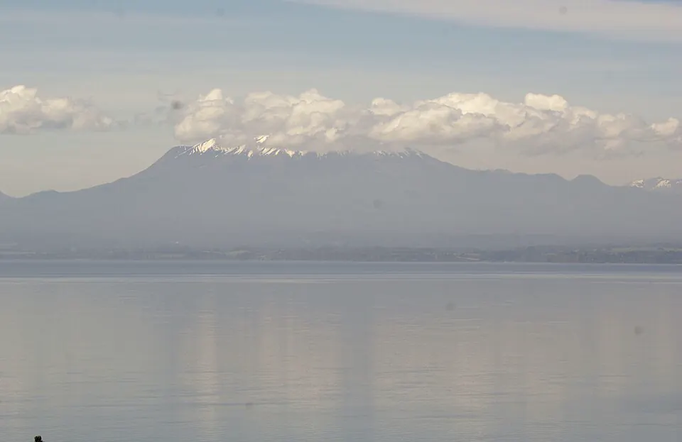

Colonización alemana en Llanquihue

En 1845, durante el gobierno de Manuel Bulnes, se dictó una ley de colonización que buscaba atraer inmigrantes europeos para poblar el sur, una zona donde la presencia del Estado era débil. Bernardo Philippi promovió la llegada de colonos alemanes, y desde 1846 arribaron los primeros grupos a Valdivia, donde se instalaron artesanos, comerciantes e industriales, entre ellos, en 1850, Carlos Anwandter.
En 1850, Vicente Pérez Rosales fue nombrado agente de colonización. Bajo su dirección se habilitaron tierras en torno al lago Llanquihue y el 12 de febrero de 1853 se fundó Puerto Montt. Para despejar los terrenos se provocaron grandes incendios de bosque, con un impacto ambiental de largo plazo. Los colonos dieron origen a localidades como Puerto Varas y Frutillar, y aportaron técnicas agrícolas, industrias y una arquitectura característica.
La historiografía ha revisado la idea de un territorio "vacío": allí vivían comunidades mapuche-huilliche y también campesinos chilenos y chilotes, que fueron desplazados o perdieron tierras. La colonización formó parte del proyecto del Estado de integrar el sur al control nacional.
Versión para niños
Hace más de 170 años, el gobierno de Chile invitó a familias de Alemania a vivir en el sur. Llegaron en barco después de un viaje muy largo. Se instalaron cerca de Valdivia y alrededor del lago Llanquihue, donde había bosques enormes. Vicente Pérez Rosales fue el encargado de recibirlas. Las familias abrieron caminos, sembraron y formaron pueblos. En esas tierras ya vivían familias mapuche-huilliche, que perdieron parte de sus terrenos.
Para maestros
Nivel sugerido: 1° medio
Objetivo: Analizar la colonización alemana como política del Estado chileno para ocupar el sur y evaluar sus efectos sociales, culturales y ambientales. El rango 1846–1853 va desde la llegada de los primeros colonos a Valdivia hasta la fundación de Puerto Montt, que se usa como año de referencia.
Preguntas para la clase:
- ¿Por qué el Estado chileno quiso traer inmigrantes europeos?
- ¿Qué aportes hicieron los colonos y qué costos tuvo la colonización para las comunidades mapuche-huilliche?
- ¿Qué consecuencias tuvieron los incendios de bosques en el paisaje del sur?
Actividad (20–30 min): Los estudiantes leen un fragmento de las memorias de Vicente Pérez Rosales, Recuerdos del pasado, y lo contrastan con un texto breve sobre la presencia huilliche en la zona. Luego responden en parejas: ¿quién cuenta esta historia y qué queda fuera de su relato?
Fuentes sugeridas: Memoria Chilena; Biblioteca Nacional Digital; Museo Histórico Nacional.
Objetivos de Aprendizaje (Currículum Nacional)
- 2° básico · HI02 OA 04 Reconocer y dar ejemplos de la influencia y aportes de inmigrantes de distintas naciones europeas … a la diversidad de la sociedad chilena
- 6° básico · HI06 OA 05 Describir cómo se conformó el territorio de Chile durante el siglo XIX, considerando colonizaciones europeas
- 1° medio · HI1M OA 13 Describir el proceso de ocupación de Valdivia, Llanquihue, Chiloé y el estrecho de Magallanes … destacando el rol de la inmigración europea
Personajes
Revisión humana pendiente. Cómo se revisa · Reportar un error
Cómo citar: Historia de Chile. (2026). Colonización alemana en Llanquihue. En Historia de Chile: atlas y línea de tiempo. https://moises-salgado.github.io/historia-de-chile/momento/colonizacion-alemana-en-llanquihue.html